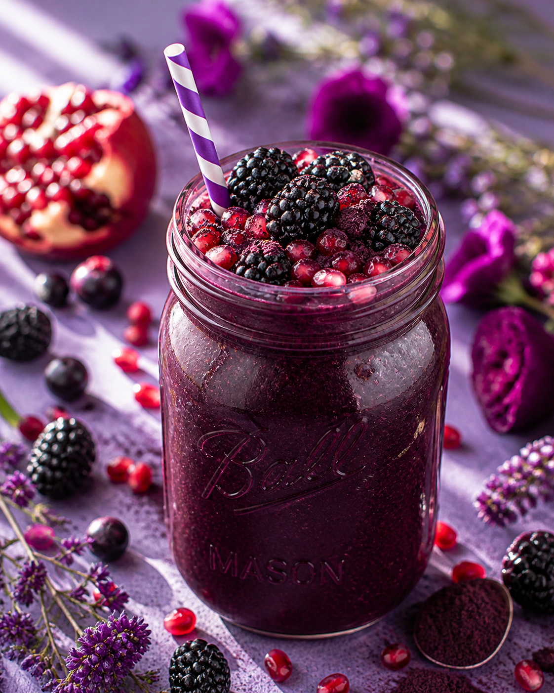

Why I Love This One
I love how grown up this smoothie tastes. It is fruity, but not candy sweet, and the pomegranate gives it a tart finish that makes every sip interesting.
When I make this one, I usually pour it into a clear glass just so I can admire the color for a second. Food should nourish you, but I also think it should delight you a little.
Once the flavors are in your head, the rest is beautifully simple. Here is exactly how I make it in my own kitchen.
Here's What You'll Need
- One unsweetened acai packet, slightly thawed
- One half cup of frozen blackberries
- One quarter cup of pomegranate juice
- One half cup of coconut kefir
- One tablespoon of ground flaxseed
- One teaspoon of honey
- A few ice cubes
I like to gather everything before I start blending, because smoothies move fast once the blender is out.
Let's Blend It Together
Run the acai packet under warm water for a few seconds so it breaks into blender friendly pieces.
Pour the pomegranate juice and coconut kefir into the blender first.
Add the acai, blackberries, flaxseed, honey, and ice.
Blend until the mixture is smooth, stopping once to scrape the sides if the acai sticks.
Taste and add a little more honey only if your berries are extra tart.
Made's Tips
Let the acai soften slightly so your blender does not have to fight it.
Coconut kefir keeps the flavor creamy while adding a tangy gut friendly base.
If you want a thicker bowl, reduce the pomegranate juice and eat it with toppings.
May your breakfast be as bold and beautiful as this glass. Love, Made